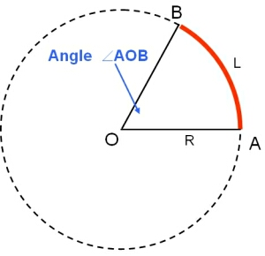
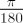
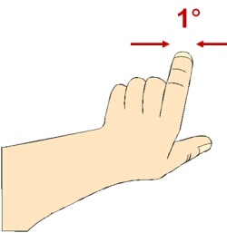

A degree is an angular measurement. If we draw two straight lines that cross at the centre of a circle, the angle is that part of the circumference (an arc) between the two lines. A complete circle is defined to contain 360 degrees, so an arc will be some fraction of this.
Angles measured in degrees may be further subdivided into arcminutes:
- 1arcminute = 1/60 of a degree
and arcseconds:
Angles are often measured in radians instead of degrees. 360 degrees = 2π radians, so that:
- 1 degree =

radians.

This division of a circle into 360 degrees comes from the Babylonian’s use of a sexagesimal (base 60) number system.
As seen from the Earth, the Sun and Moon both cover an angle of about 0.5 degrees – equivalent to half of a finger held at arms length. A hand span viewed at arms length is about 15 degrees and is equivalent to the same angular distance that the Earth rotates in one hour producing the apparent motion of the Sun across the sky (15 degrees/hour).